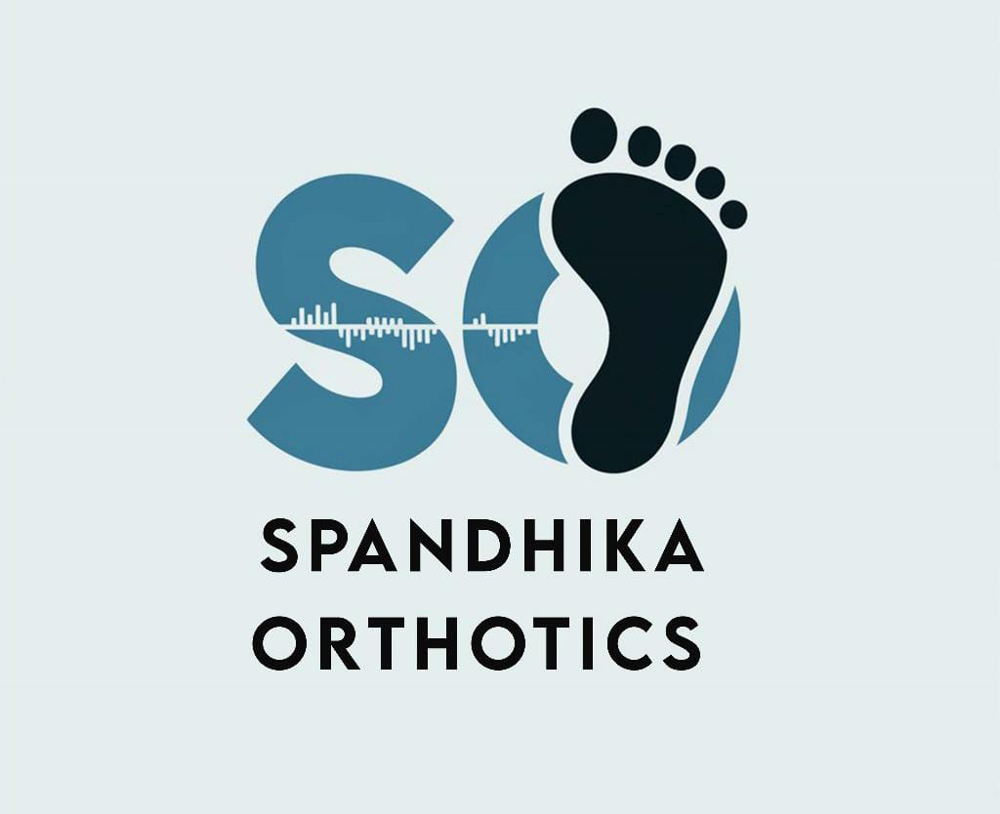
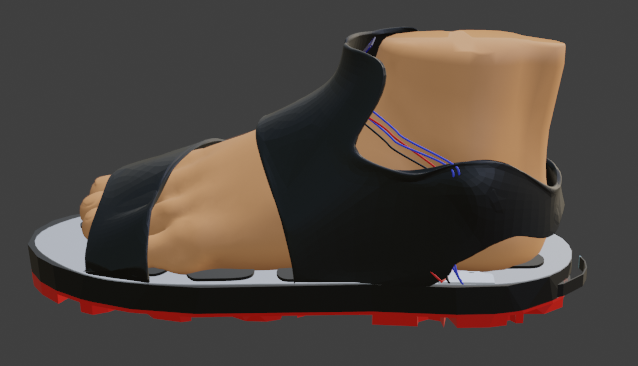

Saarthi is a smart orthotic insole that acts as a portable gait lab inside your shoe. It measures foot pressure distribution, clinical angles, and gait analysis in real-time, bridging the gap between patients and doctors for foot deformities, diabetic care, mobility issues, and rehabilitation.